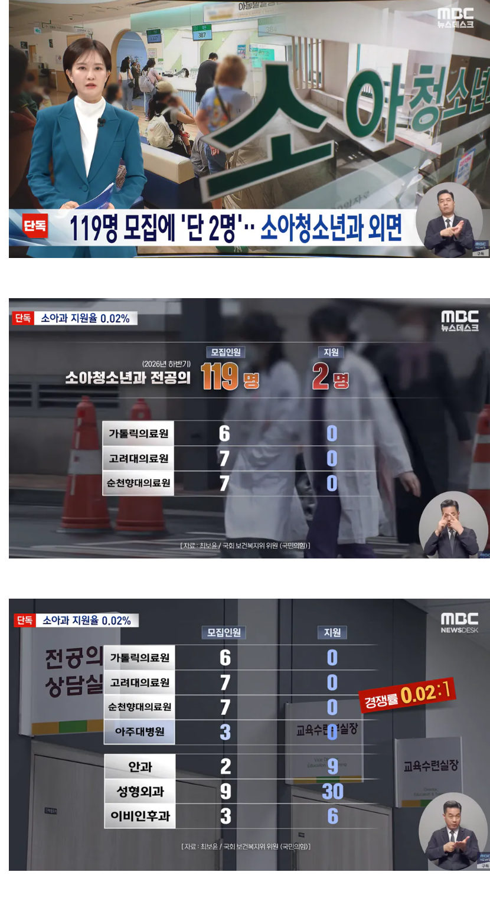
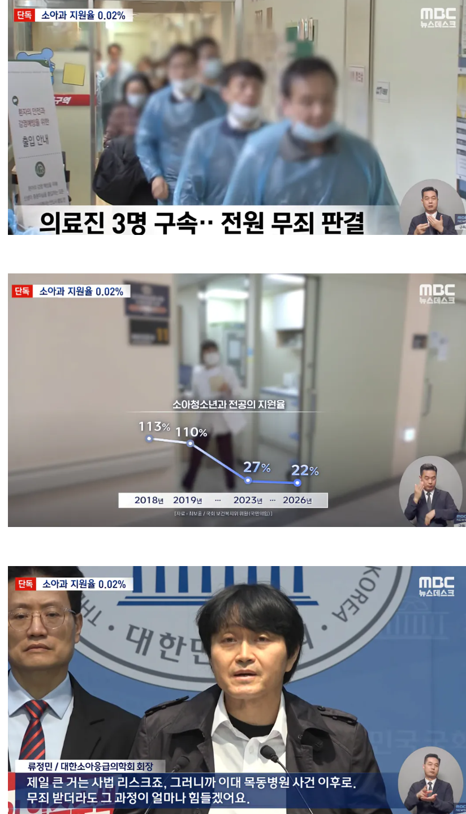

지금 돈이 문제가 아님 니는 존나 열심히 해도 주변에서 너 의심간다 일단 수갑부터 차고 가서 이야기하자 이러는데 하고싶겠음? 당장 개드립만봐도 의심가면 경찰 강압수사해도 합당하다고 생각하는 또라이도 있더라 응급실에서 사람 살리다 죽은걸 어떻게하라고 주변에 다른 응급환자도 있는데 경찰이 대뜸 와서 수사하겠다고 압박가하고 그러니 빡이쳐 안쳐?
존나 웃긴건 정작 돈 겁나빨아먹는 성형 피부과 의사들은 실수로 사고나서 사람 죽여도 변호사 써서 잘 회피하고 잘삼
입구 늘렸으니까 출구 쪼이면 됨
의대증원이 유일한 해답이지. 결국 소수 인력이 파이 나눠먹기 하니까 맛없는건 버리는 중인건데
맛없는거 안먹으면 굶어죽을 상황을 만들어야 정신 차리는건 엘~리트나 짐승이나 똑같다
이게 정답임
혹시 nicu 간호사 기피부서라 사람 못채운다는 얘기 들어본 사람? 똑같은 기피부서라도 어디는 항상 사람이 차고 어디는 항상 부족하다면 맛없어서 버리고 있는거라고 생각해야지
간호사와 의사를 비교한다고?
의사는 일자리 없으면 개업하면 됨. 전문의 자격 없어도 동네 의원 차리는 데 지장없음. 간호사는 가능?
간호사는 일터를 스스로 만들 수 없고, 의사는 스스로 만들면 되는 차이.
그럼 2018년, 2019년에는 의대생수가 개많아서 낙수효과로 소아과 간거임??
사회적인 문제도 맞다만
여러 모양들이 책임감 있고 사명감 있고 직업의식 윤리의식 제대로 갖춘 의사가 별로 없다는것도 맞지
아 소아과 지원 안하면 사명감 없는거야? 다른 분과 가서 사명감 발휘하면 되잖아
의사 시험볼때부터 전공 티오내서 티오만큼만 합격시키면 안되나, 합격점수인데 순위에서 밀리면 타전공 고를수있게해주고, 그거 싫으면 다음년도 시험보고
위 댓 애들이 계속 물고늘어지는 피부과들 피부과 전문의들이 다 진료보는게 아님. 다른 전공 의사들도 피부과로 가는거임.
전공의 문제가 아니라 안그래도 돈안되는 소아과가 법적리스크까지 높아지니까 안가는거임
소아전문의 존나 많이 만들어도 그 사람들 다른과 간다니까
만약 한의사나 간호사한테 미용전면 개방되고 비용 개같이 후려치면 걔들이 그래도 전문의 버리고 월 500벌려고 미용할까? 너도 답은 알잖아?
그 의새들이 미용 못하게 한다고 소아과를 할까? 이 질문이 어려움?
타과 또는 일반의 공급이 늘어서 급여나 소득이 대기업 수준 쯤으로 후려쳐지고 지원조차 힘들게 된 상태에서 비인기과는 2-5천씩 벌면 함.
수요-공급이 어려움?
그리고 증원이나 미용 개방이 곧 처우 개선과 법령 재정비를 안한다를 의미하는 것도 아니고 둘은 별개의 병존할 수 있는 방안인데 개발작하는 것 보면 좀 쳐맞아야 함
지원이 0명이라는거지 결국은 배정되는거 아님?
지원이 0명이면 그해 신규 소아과 의사로 나오는 사람이 0명이라는거임
앞으로 이렇게 가다간 전국에 소아과 의사가 점차 없어지겠지..
증원해서 전체적인 풀을 넓히면
미용 쪽도 포화인원이 늘어날 것도 같고
어찌되었건 죽으나 사나 사명감으로 일하는
의사의 절대적인 수도 늘어날 것 같고
종합병원 자체적으로 기피과는 적자라니
기피과 수가도 올리는 게 맞다는 생각이 드는데
저 방법은 말도 안 되고 이 방법 뿐이다
이런 건 좀 아니지 않아?
궁금한 게 예전에 개드립에서
수가 정하는 사람들이 의사들이고 이 사람들이
기피과 수가보다는 다른 과 수가를 올리는 데에
더 찬성하고 있다는 얘기를 봤는데
이건 맞는 얘기야? 아는 사람은 좀 알려주셈
그래그래 맞아맞아 의대정원 6천만명으로 확대하자! 그럼 누군가는 소아과 하겠지 뭐
여기 수준에는 그게 딱이야
증원하면 당연히 채워지지
TO많아져서 장사 안되고 수늘어나면
당연히 기피과 오는사람 생길수밖에 없음
중소라도 가는 사람처럼
손해보는 개원vs기피라도 의사하고 굶어뒤질거임?
ㅇㅇ 그러면 시원하게 의대증원 50만명으로 늘리죠?
소아과를 넘어서 시골이나 도서산간 오지 기피지역에도 의사넘쳐나고 좋을듯
모아니면 도같은 이런새끼들은 좀 사회에서 없어지면 좋겠음. 머 한명이라도 늘리면 세상 멸망하냐? 하나씩 바꿔보고 좋아지는 길로 가는거지 의사 정원 늘리며누대한민국 없어지냐고 정원도 늘리고 대우도 좋아지게 바꾸고 이런건 안되냐? 의사 정원 늘리는게 그렇게 불합리하고 세상 망하는거면 정원 줄이는건 어때? 지금 의대 정원에서 절반으로 줄이죠?
증원해야할 이유가 소아과 때문만인거임?
근데 증원하며 to 꽉 차면 나머지가 채워지니까 의미 있어지는 구조 아닌가. 다른 구조임?
공경 없는 저질 사회
의대 정원은 확대하는게 맞긴한데 동시에 미용도 풀어야 된다고 봄..
왜 맞음? 풀면 필수의료로 감?ㅋㅋ
미용으로 의사가 가니깐 간호사나 한의원한테 풀어주기만해도 좀 괜찮아질걸?
단가 떨어지면 당연히 가지
저긴 진짜 사명감 하나로 하는 사람들인데 좀만 뭐하면 의사 처벌하는데 누가 하겠냐
진료,처치하고 경찰한테 압수수색 당하거나 고소 당해서 법정가기 vs 그냥 바이탈 안하기
판결하나로 애기들 생존률을 박살내버리네ㅋㅋㅋ
이제부터 모든 신생아는 사이보그로 만든다
기초적인 임플란트 장착 전국민 의무화
인력시장마냥 모집하면 꽉꽉찬다던 병신새끼 여기도 댓글 달았을라나 ㅋㅋ
그럼 의사 정원을 10배로 늘리면 되겠네
2명 지원한것도 대단한듯
증원하면 된다는 얘기가 댓글로 아직도 나오고 있네ㅎㅎ.. 나라 ㅈ망해라 고사를 지내렴 그냥
솔직히 지금 애들 어려서 소아과 매주 가긴가는데
한번 진료하는데 2,300원인가 그렇고 약도 2,000원 정도 청구됨
돈 때문에 소아과 하는사람은 없을듯
나라에서 보조해서 연봉 올려주면 오지 않을까